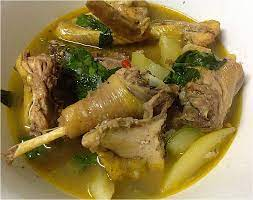

Tinola Bisaya Manok Recipe

The Aromatic Chicken Soup called Tinola
The delicious Tinolang Bisaya(Chicken Soup).
Everyone's favorite!
Ingredients:
- 1/2 kilo Bisaya(Native Chicken)
- 3 spoon of Oil
- 5 cup Water
- 1 spoon Vinegar
- 4 pcs Spring Onion
- 3 pcs Lemon Grass
- 1 Red Onion
- 4 cloves Garlic
- 1/4 grams Ginger
- 1 teaspoon Black Pepper
- 1 teaspoonfli Salt to Taste
- Ajinomoto to Taste
- Chili leaves or Malungay leaves
Steps:
- Saute for 8 minutes the Chicken with Oil, Ginger, Garlic, Red Onion, Black Pepper, and Vinegar. Add Salt.
- Add hot Water 5 cups, boiled it for 15 minutes(stir occassionally).
- Add Lemon Grass and Ajinomoto, boiled for another 5 minutes.
- Lastly, Add the Spring Onion and Chili or Malungay Leaves.
- Finish! Taste your new Favorite Soup.